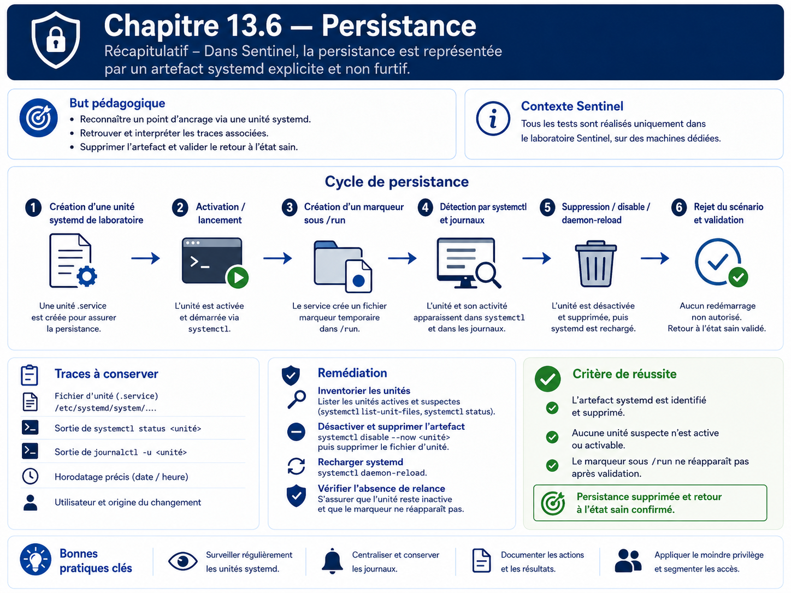

Chapitre 13.6 — Persistance
Campagne 13 — Attaques et défense
« La persistance n'est pas seulement une technique d'attaque : c'est une modification durable qu'il faut savoir retrouver. »
Vous êtes ici
PARTIE III — Mise en situation
Campagne 13 — Attaques et défense
13.1 Reconnaissance
13.2 Scan réseau
13.3 Brute force SSH
13.4 Escalade de privilèges
13.5 Mouvements latéraux
► 13.6 Persistance
13.7 Exfiltration
13.8 Étude de cas complète
Objectifs pédagogiques
À l'issue de ce chapitre, vous serez capable de :
- expliquer ce que signifie persister sur un système ;
- distinguer mécanisme de démarrage légitime et modification non autorisée ;
- créer une persistance de laboratoire explicite et inoffensive avec systemd ;
- observer les traces laissées dans le système de fichiers, journald, auditd et AIDE ;
- retirer proprement la modification ;
- vérifier qu'aucune trace active de la simulation ne subsiste.
Pourquoi ce chapitre existe
Un accès ponctuel disparaît avec la session. Une persistance cherche au contraire à survivre à un redémarrage, à une déconnexion ou à un changement d'utilisateur. Les mécanismes utilisés peuvent être parfaitement légitimes : unités systemd, timers, tâches planifiées, clés SSH, profils shell ou services de démarrage.
Le problème n'est donc pas le mécanisme lui-même, mais qui l'a modifié, pourquoi et avec quelle autorisation.
Ce chapitre ne construit pas de persistance furtive. Il utilise une unité systemd clairement nommée qui se contente d'écrire un marqueur dans /run. Cela suffit pour exercer les mécanismes de détection et de remise en état.
Modèle de persistance et de détection
Préconditions
Avant le TP :
sudo systemctl is-active sentinel
sudo systemctl list-unit-files --state=enabled | head -50
sudo ausearch -ts recent -k sentinel 2>/dev/null | tail -20
Si AIDE est installé et sa base à jour, conservez également l'état de référence.
Étape 1 — Créer une unité de laboratoire visible
Créez /etc/systemd/system/sentinel-lab-persistence.service :
[Unit]
Description=Sentinel lab persistence marker
[Service]
Type=oneshot
ExecStart=/usr/bin/touch /run/sentinel-lab-persistence.marker
RemainAfterExit=yes
[Install]
WantedBy=multi-user.target
Puis :
sudo systemctl daemon-reload
sudo systemctl enable --now sentinel-lab-persistence.service
Vérifiez :
systemctl status sentinel-lab-persistence.service --no-pager
ls -l /run/sentinel-lab-persistence.marker
Le marqueur est volontairement sans effet métier et disparaîtra au redémarrage si le service n'est plus activé.
Étape 2 — Identifier ce qui rend la modification persistante
systemctl is-enabled sentinel-lab-persistence.service
systemctl cat sentinel-lab-persistence.service
find /etc/systemd/system -maxdepth 2 -lname '*sentinel-lab-persistence*' -ls
Une unité activée crée généralement un lien dans un répertoire *.wants/. Cette relation est souvent plus importante que le simple fichier .service : elle explique quand l'unité sera déclenchée.
Étape 3 — Rechercher les traces système
sudo journalctl --since "-10 min" | grep -F 'sentinel-lab-persistence'
sudo journalctl -u sentinel-lab-persistence.service --no-pager
Si auditd surveille /etc/systemd/system :
sudo ausearch -f /etc/systemd/system/sentinel-lab-persistence.service -i
Si AIDE couvre /etc :
sudo aide --check
Ne concluez pas qu'AIDE « a échoué » si la modification est détectée : c'est précisément le comportement attendu.
Étape 4 — Chercher les mécanismes, pas le nom de la simulation
Dans un incident réel, le nom du fichier ne contiendrait pas forcément persistence. La revue doit donc porter sur les emplacements et les changements :
systemctl list-unit-files --state=enabled
systemctl list-timers --all
find /etc/systemd/system -type f -o -type l
find /etc/cron.d /etc/cron.daily -maxdepth 1 -type f -ls 2>/dev/null
Pour les comptes d'administration, contrôlez aussi les changements de clés autorisées :
find /home -path '*/.ssh/authorized_keys' -type f -ls 2>/dev/null
Cette commande sert à l'inventaire défensif. Elle ne doit pas être utilisée pour copier des clés ou secrets.
Étape 5 — Retirer la persistance de laboratoire
sudo systemctl disable --now sentinel-lab-persistence.service
sudo rm -f /etc/systemd/system/sentinel-lab-persistence.service
sudo rm -f /run/sentinel-lab-persistence.marker
sudo systemctl daemon-reload
sudo systemctl reset-failed
Vérifiez ensuite :
systemctl status sentinel-lab-persistence.service --no-pager
find /etc/systemd/system -name '*sentinel-lab-persistence*' -print
ls -l /run/sentinel-lab-persistence.marker
Les commandes doivent confirmer que la simulation n'est plus active.
Détection : construire une baseline durable
Une persistance est plus facile à détecter lorsque l'on connaît l'état attendu :
- unités activées ;
- timers ;
- tâches cron ;
- clés SSH autorisées ;
- fichiers de profil ;
- paquets installés ;
- services réseau ;
- propriétaires et permissions des fichiers sensibles.
Le contrôle d'intégrité ne remplace pas la gestion de configuration : il signale un écart, puis l'opérateur doit décider s'il est légitime.
TP — Corréler quatre sources de preuve
Pour la création puis la suppression de l'unité, collectez :
- sortie
systemctl; - métadonnées du fichier et du lien d'activation ;
- événements journald/auditd disponibles ;
- résultat AIDE si configuré.
Construisez une chronologie avec horodatages. L'objectif est de montrer qu'un seul événement peut être visible sous plusieurs angles.
Impact sur Sentinel
Sentinel 1.1.x reste inchangé. Le mécanisme de laboratoire est volontairement séparé de son service afin de ne pas introduire de comportement vulnérable dans l'application fil rouge.
Remise en état
La remise en état est une exigence du chapitre :
sudo systemctl disable --now sentinel-lab-persistence.service 2>/dev/null || true
sudo rm -f /etc/systemd/system/sentinel-lab-persistence.service
sudo rm -f /run/sentinel-lab-persistence.marker
sudo systemctl daemon-reload
sudo systemctl is-active sentinel
Si AIDE est utilisé, ne mettez à jour sa baseline qu'après avoir confirmé que le système est revenu à l'état légitime.
Synthèse
- la persistance exploite souvent des mécanismes d'administration parfaitement légitimes ;
- une baseline permet de distinguer état attendu et dérive ;
- systemd, journald, auditd et AIDE fournissent des preuves complémentaires ;
- une simulation pédagogique peut être durable sans être furtive ni dangereuse ;
- la suppression doit être suivie d'une preuve que le mécanisme n'est plus actif.
Navigation
← 13.5 — Mouvements latéraux · 13.7 — Exfiltration →
Schéma récapitulatif
